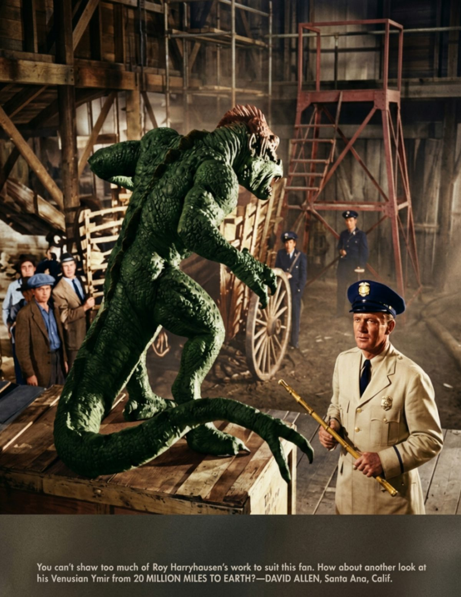

We Found The Lost Planet
It's made of minerals and sub minerals. Zork, the lost planet returns in full color.
The planet's surface is covered in lush forests and sparkling lakes.
Scientists are fascinated by the unique geology of Zork.
Signal Report
We are still developing an escape hatch for astro-personal-gas release.
Curabitur luctus, mi at congue pretium, sem ligula tincidunt mauris.
Space Crew is 2 Legit 2 Quit
Lunar wine pairings have become a popular topic among space travelers.
Expect more innovative wine options designed for zero‑gravity dining.
The latest space suits feature advanced materials and sleek shapes.